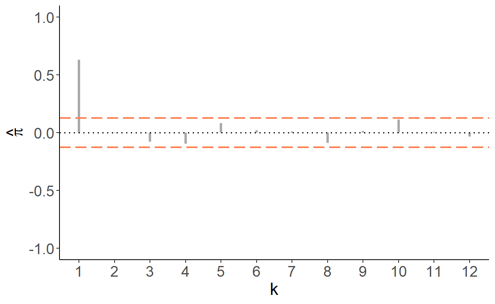

Chapter 2 Stochastic Process and Time Series
A time series is a realization of a sequence of random variables that are stored chronologically. This sequence is referred to as the stochastic process. Thus, a time series is a realization of a stochastic process. We index time periods as \(1,2,\ldots,T\), so that the stochastic process is given by \(\{Y_t:t=1,\ldots,T\}\). A time series is represented by a set of observations: \(\{y_1,\ldots,y_T\}\). One can view a time series as a finite sample from an underlying doubly–infinite sequence: \(\{\ldots,y_{-1},y_{0},y_1,y_2,\ldots,y_T,y_{T+1},y_{T+2},\ldots\}\). This is to say that the history extends beyond the starting and ending time periods of the sample at hand.
2.1 Stationarity
If all random variables, from where the time series are drawn, have the same distribution, then we refer to such data as stationary time series. Stationarity is an important feature, and the assumption, on which the time series analysis heavily relies.
Before diving any further into the concepts and methods of time series econometrics, consider the simplest kind of time series comprised of realizations from independent and identically distributed normal random variable with zero mean and constant variance: \(\varepsilon_t \sim iid\left(0,\sigma^2\right)\). The following graph plots this time series against time.
Figure 2.1: White noise: an illustration

Such time series are referred to as white noise. That is, \(\{y_t: t=1,\ldots,T\}\), is a white noise process if: \[\begin{align*} & E(y_t) = 0,\;~\forall~t\\ & Var(y_t) = \sigma^2,\;~\forall~t\\ & Cov(y_t,y_{t-k}) = 0,\;~\forall~k \ne 0 \end{align*}\]
Because each observation is drawn from the same distribution, white noise is a stationary time series. Indeed, it is a special type of stationary time series insofar as its mean, variance, and covariance are time-invariant. Note, for a time series to be stationary, neither the mean nor the covariances need to be equal to zero. Thus, \(\{y_t\}\) is stationary if the mean and variance are independent of \(t\), and the autocovariances are independent of \(t\) for all \(k\).
2.2 Serial Dependence
It is more of the norm rather than the exception for a time series to be correlated over time. Indeed, because of the sequential nature of time series, we commonly observe dependence among the temporally adjacent time series. That is, for most economic time series, we would expect \(y_t\) and \(y_{t-1}\) to be correlated. Such correlation, referred to as the first order autocorrelations, is given by: \(\rho_1=Cor(y_{t},y_{t-1}) = \frac{Cov(y_{t},y_{t-k})}{Var(y_t)}\). In general, the \(k^{th}\) order autocorrelation is given by: \[\rho_k=Cor(y_{t},y_{t-k}) = \frac{Cov(y_{t},y_{t-k})}{Var(y_{t})},\;~~k=1,2,\ldots\]
Autocorrelations are commonly illustrated via the so-called autocorrelogram, which plots the sequence of autocorrelation coefficients against the lags at which these coefficients are obtained. For example, an autocorrelogram of the previously illustrated white noise process is as follows:
Figure 2.2: Autocorrelation

For each \(k\), the vertical line extending from zero represents the autocorrelation coefficient at that lag. The red dashed lines denote the 90% confidence interval, given by \(\pm 1.96/\sqrt{T}\), where \(T\) is the length of the time series.
Another relevant measure of the time series dependence is partial autocorrelation, which is correlation between \(y_t\) and \(y_{t-k}\) net of any correlations between \(y_t\) and \(y_{t-k+j}\), for all \(j=1,\ldots,k-1\). Similar to autocorrelations, partial autocorrelations can also be illustrated using autocorrelograms:
Figure 2.3: Partial Autocorrelation
Figure 2.4: Spectral Density

2.3 Transformations
It is common to transform time series by taking logarithms, differences, or differences of logarithms (growth rates). Such transformations usually are done to work with the suitable variable for the desired econometric analysis. For example, if an economic time series is characterized by an apparent exponential growth (e.g., real GDP), by taking natural logarithms the time series ``flatten’’ and the fluctuations become proportionate. The difference operator is denoted by \(\Delta\), so that \(\Delta y_t = y_t-y_{t-1}\). The following three graphs illustrate (i) a time series with an apparent exponential growth, (ii) the natural logarithm of this time series, and (iii) their differences (i.e., the log-differences of the original series).
Figure 2.5: A time series and its transformations

Page built: 2022-04-26 using R version 4.1.2 (2021-11-01)